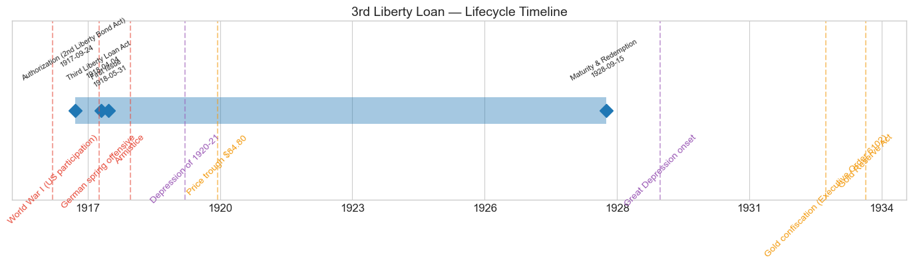
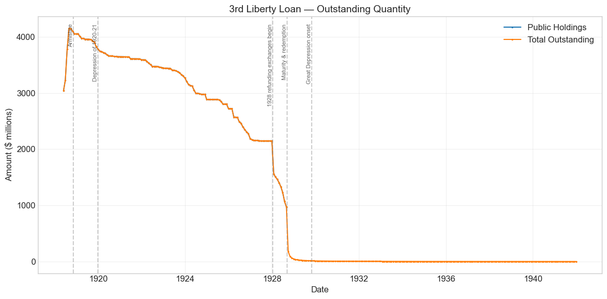
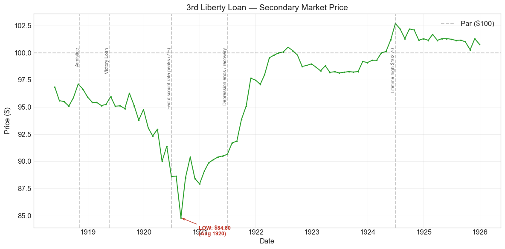
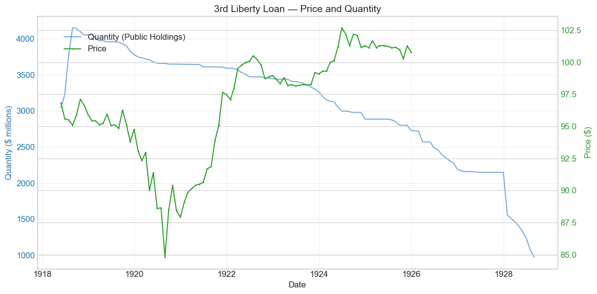
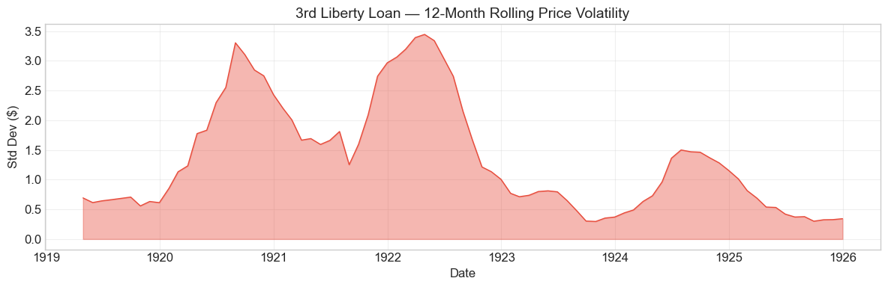

Bond Biography: 3rd Liberty Loan (4.25%)#
An Enhanced Chapter from the Hall-Payne-Sargent US Federal Bond Database (2,857 issues, 1776–1960)
Bond ID (L1): 20168 Category: Interest Bearing > Marketable > Liberty Loan Coupon Rate: 4.25% First Issue Date: May 31, 1918 (campaign of April 6 – May 4, 1918) Term: 10 years – a definite maturity, September 15, 1928; not callable, not convertible Sold at Par: $100
The Third Liberty Loan was the war loan sold under fire. Its campaign opened on April 6, 1918 – the first anniversary of the American declaration of war – with the German spring offensive still driving toward Paris and the outcome of the war on the Western Front genuinely in doubt. It was also the loan on which the Treasury finally settled the terms of American war finance: a 4.25% coupon that became the standard rate of the Liberty era, and a deliberately plain bond – no conversion privilege, no call option, a fixed ten-year life – after two loans whose embedded options had complicated the Treasury’s balance sheet.
import pandas as pd
import numpy as np
import matplotlib.pyplot as plt
import matplotlib.patches as mpatches
import datetime
import warnings
warnings.filterwarnings('ignore')
plt.style.use('seaborn-v0_8-whitegrid')
plt.rcParams.update({'figure.figsize': (12, 6), 'font.size': 12,
'axes.titlesize': 14, 'axes.labelsize': 12})
# Load the bond database
store = pd.HDFStore('../data/BondDF.h5', mode='r')
BondList = store['BondList']
BondQuant = store['BondQuant']
BondPrice = store['BondPrice']
store.close()
BondQuant_T = BondQuant.transpose()
BondPrice_T = BondPrice.transpose()
bond_id = 20168
print(f'Loaded data for: 3rd Liberty Loan (ID: 20168)')
/Users/thomassargent/anaconda3/lib/python3.9/site-packages/pandas/core/arrays/masked.py:60: UserWarning: Pandas requires version '1.3.6' or newer of 'bottleneck' (version '1.3.5' currently installed).
from pandas.core import (
Loaded data for: 3rd Liberty Loan (ID: 20168)
Overview#
The 3rd Liberty Loan was authorized by the Third Liberty Loan Act of April 4, 1918, an amendment to the Second Liberty Bond Act of 1917 – the standing statute, described in the 2nd Liberty Loan chapter, under which all of the later war loans were issued. The bonds carried a coupon of 4.25%, were dated May 9, 1918 (the database records the first month-end observation on May 31, 1918), and matured in ten years, on September 15, 1928. During its lifetime on the secondary market, the bond’s average price was \(96.7, ranging from **\)84.80 to \(102.70** (92 monthly observations from May 1918 to December 1925). Peak outstanding reached **\)4.15 billion** on August 31, 1918.
The Third Loan was floated at the most dangerous moment of the war for the Allies. On March 21, 1918, Germany – freed on its eastern front by Russia’s exit from the war – launched the great spring offensive that broke through the British lines on the Somme and, in the weeks that followed, drove closer to Paris than German armies had been since 1914. When the Third Liberty Loan campaign opened on April 6, 1918, the war’s outcome looked less certain than at any time since American entry a year earlier. The Treasury turned the crisis into the campaign’s argument: this was not a loan sold on the expectation of easy victory, but on the fear of defeat. The response was extraordinary. Against a \(3 billion** offering, roughly **18.4 million subscribers** -- about double the Second Loan's count, and more than any loan before it -- pledged approximately **\)4.177 billion. This time the Treasury accepted every subscription in full, and the average subscription fell to roughly $227, the smallest of any wartime loan: the marginal buyer was now a genuinely small saver.
Two design choices, both reactions to the first two loans, make this bond distinctive. First, Secretary of the Treasury William Gibbs McAdoo set the coupon at 4.25% – and by doing so triggered the conversion privileges embedded in the earlier loans: the Second Loan’s 4s (and the First Loan’s 3.5s) became exchangeable into 4.25% bonds, and 4.25% became the standard coupon of American war finance, carried forward unchanged by the Fourth Loan. Second, the Third Loan itself carried no conversion privilege and no call option. It was a definite ten-year bond: whatever happened to interest rates, holders could not ratchet up into a later coupon, and the Treasury could not redeem early. That plainness would shape its whole life – through the below-par years of 1919–1921, the recovery of 1921–1924, and the carefully managed refunding at its 1928 maturity under Secretary Andrew Mellon.
Historical Context#
The following major events occurred during this bond’s lifetime:
Date |
Event |
Category |
|---|---|---|
1917-04-06 to 1918-11-11 |
World War I (US participation) |
War |
1918-03-21 |
German spring offensive (Operation Michael) begins |
War |
1918-04-04 |
Third Liberty Loan Act |
Legislation |
1918-04-06 to 1918-05-04 |
Third Liberty Loan campaign |
Legislation |
1918-11-11 |
Armistice |
War |
1920-01-01 to 1921-07-01 |
Depression of 1920–21 |
Crisis |
1920-06 |
New York Fed discount rate peaks at 7% |
Monetary |
1928-09-15 |
Maturity and redemption of the Third Liberty Loan |
Fiscal |
1929-10-29 to 1933-03-01 |
Great Depression onset |
Crisis |
1933-04-05 |
Gold confiscation (Executive Order 6102) |
Monetary |
1934-01-30 |
Gold Reserve Act |
Monetary |
The War: A Loan Sold in a Military Crisis#
The First Loan had been floated in the hopeful spring of 1917, the Second while the first American divisions were arriving in France. The Third was sold while the Allied line was breaking. Ludendorff’s offensives of March–May 1918 recaptured in weeks the ground the Allies had bought with years of blood, and American newspapers carried maps of the German advance alongside Liberty Loan appeals. Standard accounts record that the campaign’s emblem was the Liberty Bell and that communities competed for “honor flags” awarded for meeting their quotas; whatever the iconography, the message was blunt – the war might yet be lost, and money was a weapon. Wartime demand, patriotic purchasing, and a Federal Reserve policy of keeping money rates deliberately low held the bond in the mid-90s through the Armistice. Note that, like its siblings, the bond slipped below par almost immediately: the first recorded observation, in May 1918, is already $96.86. Even 4.25% was below what an unsentimental market required.
The Depression of 1920–21#
The postwar years treated the Thirds exactly as they treated every Liberty issue. Inflation ran near 15% in 1919; the Federal Reserve, freed of its wartime duty to support the Treasury’s market, pushed the New York discount rate from 4.75% in late 1919 to 7% by June 1920; and long-term rates followed. The Thirds sank to their lifetime low of \(84.80 in August 1920** -- a loss of about 15 cents on the dollar for the subscriber of April 1918, and essentially the same trough, in the same month, as the 4% Seconds (\)84.36). Because this bond was not convertible, its holders had no escape hatch into a higher coupon; they could only wait. The deflationary collapse of 1920–21 then reversed the process: as prices and policy rates fell, the bond rallied from the mid-80s in early 1921 to \(97.66 by November 1921, regained par during 1923--24, and touched its lifetime high of **\)102.70 in June 1924.
The Mellon Era and the 1928 Endgame#
The bond’s final act belongs to the fiscal politics of the 1920s. Under Secretary Andrew Mellon the federal government ran surpluses every year and systematically retired and refinanced the war debt at the decade’s lower interest rates. For the callable Seconds that meant an early call in November 1927; for the non-callable Thirds it meant something new in Treasury practice – managing the approach of a fixed $2 billion-plus maturity on a single day, September 15, 1928, the largest single maturity the Treasury had yet faced. As detailed below, the Treasury handled it with a sequence of exchange offerings across 1928 that drew holders into new, lower-coupon securities before the maturity date, redeeming the remainder in cash. The Great Depression, gold confiscation, and the Gold Reserve Act therefore fall within the bond’s statistical lifetime – a residual of never-presented certificates lingers in the data into the 1940s – but after its economic death in September 1928.
# Bond Lifecycle Timeline
fig, ax = plt.subplots(figsize=(14, 4))
# Key dates
dates = [('Authorization (2nd Liberty Bond Act)', '1917-09-24'), ('Third Liberty Loan Act', '1918-04-04'), ('First Issue', '1918-05-31'), ('Maturity & Redemption', '1928-09-15')]
events = [('World War I (US participation)', '1917-04-06', 'war'), ('German spring offensive', '1918-03-21', 'war'), ('Armistice', '1918-11-11', 'war'), ('Depression of 1920-21', '1920-01-01', 'crisis'), ('Price trough $84.80', '1920-08-31', 'monetary'), ('Great Depression onset', '1929-10-29', 'crisis'), ('Gold confiscation (Executive Order 6102)', '1933-04-05', 'monetary'), ('Gold Reserve Act', '1934-01-30', 'monetary')]
import matplotlib.dates as mdates
from datetime import datetime
# Plot bond lifetime bar
d0 = datetime.strptime(dates[0][1], '%Y-%m-%d')
d1 = datetime.strptime(dates[-1][1], '%Y-%m-%d')
ax.barh(0, (d1 - d0).days, left=mdates.date2num(d0), height=0.3,
color='#1f77b4', alpha=0.4, label='Bond Lifetime')
# Mark key dates
for label, date_str in dates:
d = datetime.strptime(date_str, '%Y-%m-%d')
ax.plot(mdates.date2num(d), 0, 'D', color='#1f77b4', markersize=10)
ax.annotate(f'{label}\n{date_str}', (mdates.date2num(d), 0.25),
ha='center', va='bottom', fontsize=8, rotation=30)
# Mark historical events
colors = {'war': '#e74c3c', 'crisis': '#9b59b6', 'legislation': '#2ecc71', 'other': '#95a5a6', 'monetary': '#f39c12'}
for name, date_str, cat in events:
d = datetime.strptime(date_str, '%Y-%m-%d')
ax.axvline(mdates.date2num(d), color=colors.get(cat, 'gray'), alpha=0.5, linestyle='--')
ax.annotate(name, (mdates.date2num(d), -0.25), ha='center', va='top',
fontsize=10, rotation=45, color=colors.get(cat, 'gray'))
ax.set_yticks([])
ax.xaxis.set_major_formatter(mdates.DateFormatter('%Y'))
ax.set_title('3rd Liberty Loan — Lifecycle Timeline')
ax.set_ylim(-1, 1)
plt.tight_layout()
plt.show()

Bond Features#
Feature |
Detail |
|---|---|
Name |
3rd Liberty Loan |
Authorizing Act |
Second Liberty Bond Act (Sept. 24, 1917), as amended by the Third Liberty Loan Act of April 4, 1918 |
Campaign |
April 6 – May 4, 1918 |
First Issue Date |
May 31, 1918 (bonds dated May 9, 1918) |
Term |
10 years – definite maturity September 15, 1928 |
Coupon Rate |
4.25% |
Payment Frequency |
Semi-annual (March 15 and September 15) |
Callable |
No – unlike the 1st, 2nd, and 4th Loans |
Convertible |
No – the conversion privilege was dropped |
Payable in Coin |
Yes (gold) |
Price Sold |
Par (100) |
Offered |
$3.0 billion |
Subscribed |
~$4.177 billion (~139% of the offering) |
Accepted |
~$4.177 billion – all subscriptions accepted in full |
Subscribers |
~18.4 million – roughly double the 2nd Loan’s count |
Average Subscription |
~$227, the smallest of the wartime loans |
Tax Status |
Exempt from state and local taxes and the normal federal income tax; subject to surtaxes (with limited additional exemptions for moderate holdings); receivable at par for federal estate taxes |
Three of these lines carry the bond’s whole character. Accepting every subscription – rather than scaling back an oversubscription as in the first two loans – rewarded the breadth of the campaign and pushed the issue to $4.18 billion, the largest yet. Non-convertibility ended the ratchet by which each new loan’s higher coupon had raised the cost of all the old ones: McAdoo had watched the Third’s own 4.25% coupon force the conversion of billions of Firsts and Seconds, and declined to leave the same hostage to fortune again. And non-callability with a short, definite term made the bond the simplest promise the wartime Treasury ever sold: 4.25% in gold, twice a year, for exactly ten years – with the entire principal due on a single day in September 1928.
# Display full bond features from database
row = BondList.loc[20168]
display_cols = [
"Treasury's Name Of Issue", 'Authorizing Act', 'Term Of Loan',
'First Issue Date', 'First Redemption Date', 'Final Redemption Date',
'Coupon Rate', 'Coupons Per Year', 'Callable', 'Coin',
'Authorized Amount', 'Price Sold'
]
print('Bond Features from Database:')
print('=' * 55)
for col in display_cols:
if col in row.index:
print(f' {col:<30} {row[col]}')
Bond Features from Database:
=======================================================
Treasury's Name Of Issue 3rd Liberty Loan
Authorizing Act September 24, 1917
Term Of Loan 10 years
First Issue Date 1918-05-31 00:00:00
First Redemption Date NaT
Final Redemption Date NaT
Coupon Rate 4.25
Coupons Per Year 2.0
Callable 0.0
Coin 1.0
Authorized Amount nan
Price Sold 1.0
Bond Quantity Over Time#
The bond’s outstanding quantity peaked at $4.15 billion on August 31, 1918. Public-holdings data span May 1918 to August 1928 (124 monthly observations); a residual “Total Outstanding” series of matured but never-presented bonds extends to 1941.
The quantity path is, by Liberty Loan standards, strikingly smooth – and the smoothness is the story. Because the Third had no conversion privilege, its series shows none of the vertiginous conversion cliffs that dominate the 1st and 2nd Loan charts. Instead: a rapid installment-driven ascent over the summer of 1918, a long gentle decade of decline as the Treasury bought in and retired bonds, and then the terminal plunge of 1928 as the issue was refunded and redeemed at maturity.
# Bond quantity over time
fig, ax = plt.subplots(figsize=(12, 6))
for stype in ['Public Holdings', 'Total Outstanding']:
try:
s = BondQuant_T.loc[(20168, stype)]
s = s[s.notna()]
if len(s) > 0:
ax.plot(s.index, s.values / 1e6, marker='.', markersize=3, linewidth=1.5, label=stype)
except KeyError:
pass
ax.set_title('3rd Liberty Loan — Outstanding Quantity')
ax.set_xlabel('Date')
ax.set_ylabel('Amount ($ millions)')
ax.legend()
ax.grid(True, alpha=0.3)
events = {'1918-11-11': 'Armistice', '1920-01-01': 'Depression of 1920-21', '1928-01-15': '1928 refunding exchanges begin', '1928-09-15': 'Maturity & redemption', '1929-10-29': 'Great Depression onset'}
for date_str, label in events.items():
d = pd.Timestamp(date_str)
ax.axvline(d, color='gray', alpha=0.4, linestyle='--')
ax.text(d, ax.get_ylim()[1]*0.97, label, rotation=90, va='top', ha='right', fontsize=8, alpha=0.7)
plt.tight_layout()
plt.show()

Quantity Analysis#
Three phases drove the quantity pattern:
1. Installment-driven issuance (May – August 1918). As with the earlier loans, subscribers paid in stages, and the database records the payments arriving: \(3.04 billion** outstanding at the end of May 1918, \)3.23 billion in June, \(3.78 billion in July, and the full peak of **\)4.15 billion by August 31, 1918. The subscription books had closed on May 4; the summer ascent is the installment schedule at work, not new borrowing decisions.
2. The long, quiet pay-down (1919–1927). From \(4.05 billion at the end of 1918, public holdings declined steadily to **\)2.15 billion by the end of 1927** – roughly half the issue retired before maturity, without a single call or conversion. The instruments of this attrition were the debt-retirement machinery of the surplus years: the cumulative sinking fund established in 1920, Treasury purchases out of budget surpluses under Secretaries Houston, Mellon and their debt-management program, and the receipt of Liberty bonds in payment of federal estate taxes, for which the Thirds were receivable at par. Note the contrast with the 2nd Loan chapter’s chart: there, a 77% single-month conversion cliff; here, a decade of two-percent-a-year erosion. This is what a bond without embedded options looks like in the data.
3. Refunding and redemption (1928). The terminal plunge came in the maturity year. Public holdings fell from \(2.148 billion in December 1927 to **\)1.556 billion in January 1928** – the first and largest of a sequence of refunding exchanges – and then step by step to \(972 million by August 1928**, where the public-holdings series ends, on the eve of the September 15 maturity. The Treasury's "Total Outstanding" series then collapses to about **\)50 million by the end of 1928: the bonds still outstanding after redemption day were simply those never presented for payment. That residual – dwindling from \(13 million in 1929 to about **\)1.7 million in 1941**, earning nothing – is the same quiet census of forgetfulness observed for the Seconds: certificates in attic trunks and the safe-deposit boxes of the deceased, kept as souvenirs of the war rather than as financial assets.
Secondary Market Prices#
Overall Statistics (1918-05-31 to 1925-12-31): Mean \(96.7, Range \)84.80–\(102.70, Std Dev \)4.22, 92 observations.
By Period:
Period |
Mean |
Std |
Min |
Max |
Obs |
|---|---|---|---|---|---|
Issue to End (1918-05 to 1925-12) |
$96.7 |
$4.22 |
$84.80 |
$102.70 |
92 |
The price history divides into the three acts common to every Liberty issue, with the Third’s non-convertibility sharpening each one:
Wartime, below par (1918). The bond never traded at par in the database: the first observation, May 1918, is already **\(96.86**, and the bond spent the war between \)95 and \(97, ticking up to \)97.12 in October 1918 as victory neared. Patriotic demand and the Federal Reserve’s low-rate policy cushioned the price, but 4.25% was still below the market-clearing rate for a ten-year gold bond in 1918.
The postwar slide (1919 – August 1920). Postwar inflation, the Victory Loan’s competing 4.75% coupon (May 1919), and the Federal Reserve’s sharp tightening – a 7% New York discount rate by June 1920 – ground the price down to its lifetime low of **\(84.80 in August 1920**. The subscriber of April 1918, told that buying bonds was a duty, watched a \)100 certificate quote at $85. Unlike holders of the Firsts and Seconds, holders of Thirds had no conversion privilege to soften the blow; their compensation was the shortest maturity of the long Liberty issues, which limited the drawdown to -12.7% from the 1918 peak, the mildest of the family.
Recovery and premium (late 1920 – 1925). As deflation broke the inflation and rates fell, the bond rallied hard: from the mid-80s in early 1921 to \(97.66 by November 1921**, back around par during 1923, and to its lifetime high of **\)102.70 in June 1924 – a premium reflecting both the low rates of the mid-1920s and the arithmetic of a non-callable 4.25% coupon that the Treasury could not take away before 1928. The series ends in December 1925 at $100.78, a bond gliding toward a maturity whose payment no one doubted.
# Annotated price chart
fig, ax = plt.subplots(figsize=(12, 6))
s = BondPrice_T.loc[(20168, 'Average')]
s = pd.to_numeric(s, errors='coerce').dropna()
if len(s) > 0:
ax.plot(s.index, s.values, marker='.', markersize=3, linewidth=1.5, color='#2ca02c')
ax.axhline(100, color='black', alpha=0.2, linestyle='--', label='Par ($100)')
ax.set_title('3rd Liberty Loan — Secondary Market Price')
ax.set_xlabel('Date')
ax.set_ylabel('Price ($)')
ax.legend()
ax.grid(True, alpha=0.3)
events = {'1918-11-11': 'Armistice', '1919-05-20': 'Victory Loan', '1920-06-30': 'Fed discount rate peaks (7%)', '1921-07-01': 'Depression ends / recovery', '1924-06-30': 'Lifetime high $102.70'}
for date_str, label in events.items():
d = pd.Timestamp(date_str)
ax.axvline(d, color='gray', alpha=0.4, linestyle='--')
ax.text(d, ax.get_ylim()[1]*0.97, label, rotation=90, va='top', ha='right', fontsize=8, alpha=0.7)
# Mark the lifetime low
low_date, low_val = s.idxmin(), s.min()
ax.annotate(f'LOW: ${low_val:.2f}\n({low_date.strftime("%b %Y")})',
xy=(low_date, low_val), xytext=(30, -30), textcoords='offset points',
fontsize=9, fontweight='bold', color='#c0392b',
arrowprops=dict(arrowstyle='->', color='#c0392b'))
plt.tight_layout()
plt.show()

# Price and Quantity — dual-axis chart
fig, ax1 = plt.subplots(figsize=(12, 6))
# Quantity (left axis)
for stype in ['Public Holdings', 'Total Outstanding']:
try:
q = BondQuant_T.loc[(20168, stype)]
q = q[q.notna()]
if len(q) > 0:
ax1.plot(q.index, q.values / 1e6, color='#1f77b4', alpha=0.6, label=f'Quantity ({stype})')
break
except KeyError:
pass
ax1.set_xlabel('Date')
ax1.set_ylabel('Quantity ($ millions)', color='#1f77b4')
ax1.tick_params(axis='y', labelcolor='#1f77b4')
# Price (right axis)
ax2 = ax1.twinx()
p = BondPrice_T.loc[(20168, 'Average')]
p = pd.to_numeric(p, errors='coerce').dropna()
if len(p) > 0:
ax2.plot(p.index, p.values, color='#2ca02c', marker='.', markersize=2, label='Price')
ax2.set_ylabel('Price ($)', color='#2ca02c')
ax2.tick_params(axis='y', labelcolor='#2ca02c')
ax1.set_title('3rd Liberty Loan — Price and Quantity')
ax1.grid(True, alpha=0.3)
fig.legend(loc='upper left', bbox_to_anchor=(0.1, 0.9))
plt.tight_layout()
plt.show()

Detected Price/Quantity Events#
The following significant movements were auto-detected:
Date |
Type |
Change |
Explanation |
|---|---|---|---|
1928-01 |
Quantity decrease |
-27.6% |
The 1928 refunding begins. Public holdings fell from \(2.148 billion to \)1.556 billion in a single month as the Treasury, facing a fixed and uncallable maturity of over \(2 billion on September 15, 1928, opened the first of a sequence of exchange offerings that let holders swap maturing Thirds for new, lower-coupon Treasury securities in advance of the maturity date. Further exchanges and cash retirements carried holdings down to \)972 million by August 1928, and the balance was redeemed in cash at maturity. |
The auto-detector found no comparably sharp price events, and that too is informative. The Third’s price series contains nothing like the 1st Loan’s conversion-era dislocations or the anomalous May 1920 quote flagged in the 2nd Loan chapter as a probable data artifact. Its movements were slow, broad, and macroeconomic – the grinding 1919–1920 decline under rising rates, the equally broad 1921–1924 recovery under falling ones. A bond with no embedded options, held by eighteen million people, traded on exactly one thing: the level of interest rates.
Price Volatility#
Maximum drawdown: -12.7% (from peak on 1918-10-31 to trough on 1920-08-31)
Average monthly return: 0.050%
The chart below shows the 12-month rolling standard deviation of prices, indicating periods of high and low price stability. As for every Liberty issue, volatility peaks around 1920–21, when the Federal Reserve’s postwar tightening and the deflationary collapse that followed whipsawed long-term rates. But the Third’s maximum drawdown of -12.7% was the shallowest of the major Liberty issues – shallower than the 3.5% Firsts (about -15%) or the 4% Seconds (about -16%) – for a simple structural reason: with only eight to ten years to run, its price was less sensitive to a given move in yields than the longer 1927–42 and 1932–47 issues. Duration, not sentiment, ranked the family’s suffering in 1920. The placid readings of 1923–25 show a bond that had become a quiet near-par security counting down to its 1928 maturity.
# Rolling volatility (12-month window)
p = BondPrice_T.loc[(20168, 'Average')]
p = pd.to_numeric(p, errors='coerce').dropna()
if len(p) >= 12:
rolling_std = p.rolling(window=12).std().dropna()
fig, ax = plt.subplots(figsize=(12, 4))
ax.fill_between(rolling_std.index, rolling_std.values, alpha=0.4, color='#e74c3c')
ax.plot(rolling_std.index, rolling_std.values, color='#e74c3c', linewidth=1)
ax.set_title('3rd Liberty Loan — 12-Month Rolling Price Volatility')
ax.set_xlabel('Date')
ax.set_ylabel('Std Dev ($)')
ax.grid(True, alpha=0.3)
plt.tight_layout()
plt.show()
else:
print('Insufficient data for rolling volatility (need >= 12 observations)')

Issuance, Distribution, and Redemption#
The bond was sold at par (\(100 per \)100 of face value).
The April 1918 Campaign#
The Third Liberty Loan drive ran from April 6 to May 4, 1918, and it mobilized – for the third time in twelve months – the machinery described at length in the 1st Liberty Loan chapter: the twelve Federal Reserve Banks as distribution hubs, Liberty Loan committees in every city and county, Four-Minute Men in the movie theaters, posters, parades, bond rallies, and celebrity tours. What was new in the spring of 1918 was the emotional register. The First Loan had been sold on hope and the Second on commitment; the Third was sold on alarm, with the German offensive supplying daily headlines that no Treasury publicist could have manufactured. Standard accounts of the campaign describe Liberty Bell imagery, honor-flag competitions between towns, and quota assignments that reached down to individual counties and factories – a deliberate strategy of making subscription a local, social obligation rather than a financial decision.
The results registered the strategy’s success on every margin the Treasury cared about: roughly 18.4 million subscribers (about one American in six, and nearly five times the First Loan’s count), an average subscription of only about \(227**, and -- for the first time -- **acceptance of every subscription in full**, so that the \)3 billion offering became a \(4.18 billion issue. Bonds were available in denominations from **\)50 up to $10,000, purchasable on installment through banks and employers.
Who Bought#
Small savers were, more than in any previous loan, the campaign’s center of gravity – the falling average subscription is the statistical trace of the door-to-door canvass, the payroll-deduction plan, and the schoolhouse rally.
Banks subscribed on their own account, lent to customers against Liberty Bonds at preferential rates supported by the Federal Reserve’s discount policy (“borrow and buy”), and served, unpaid, as the distribution network.
Corporations and employers subscribed directly and ran installment plans for their workers.
As with the earlier loans, the reliance on bank credit to finance bond purchases blunted McAdoo’s stated goal of paying for the war out of genuine saving, and fed the wartime and postwar inflation that would later drag the bond into the 80s.
Redemption: The 1928 Maturity#
Because the Thirds were not callable, Secretary Mellon could not sweep them into his refunding program early, as he did the Seconds in November 1927. Instead the Treasury faced, on September 15, 1928, the largest single-day maturity in its history to that point – over \(2 billion still outstanding at the start of the year. The operation that followed is a landmark in the development of modern debt management, described in detail by Garbade (2012): across 1928 the Treasury conducted a sequence of **exchange offerings**, inviting holders of maturing Thirds to swap into new Treasury notes and certificates at the decade's lower coupon rates, supplemented by cash purchases and retirements. The database shows the campaign's footprint month by month -- holdings falling from \)2.15 billion in December 1927 to $972 million by August 1928 – and on September 15 the remainder was paid off in cash at par. Ten years and one day after the guns of the spring offensive had given the campaign its urgency, the loan was extinguished exactly on the schedule printed on its face – the only major Liberty issue redeemed at its original contractual maturity.
Implications and Legacy#
The 4.25% Standard#
The Third Liberty Loan fixed the price of American war finance. Its 4.25% coupon triggered the final round of conversions of the earlier loans, became the rate of the great Fourth Loan, and defined the coupon on the majority of the roughly $17 billion of long-term Liberty debt outstanding at the Armistice. When the Treasury of the 1920s and 1930s measured the savings from refunding the war debt, 4.25% was the benchmark it measured against.
The End of the Conversion Ratchet#
By dropping the conversion privilege, the Third Loan ended an experiment. Conversion had been a clever solution to the First Loan’s underpriced coupon – protecting patriotic subscribers when rates rose – but it carried a fiscal ratchet: every increase in the coupon on a new loan raised the cost of the old ones too. The Treasury judged 4.25% close enough to a market rate to stand on its own, and no subsequent federal loan revived the general conversion privilege. The problem conversion had been invented to solve – small savers watching marketable bonds sink below cost – was eventually solved a different way, in the non-marketable World War II savings bond, whose redemption value could never fall below purchase price.
A Definite Bond and the Birth of Modern Debt Management#
The Third’s plain design gave the interwar Treasury its hardest scheduling problem and, in solving it, some of its modern tools. A non-callable $4 billion issue maturing on a single day forced the Treasury to plan years ahead: building surpluses and the sinking fund, retiring roughly half the issue in the open market and through tax receipts across 1919–1927, and executing the 1928 exchange offerings that rolled most of the remainder into cheaper paper before maturity day. Garbade (2012) places these operations – regular quarterly financing dates, exchange offerings, the active management of a maturity calendar – among the founding practices of the modern Treasury market, which was born of the need to distribute, support, and then refinance the Liberty debt. The Liberty Loans created the first mass market in Treasury securities; the Third Loan’s 1928 maturity taught that market its first great refunding.
Financing the War#
At roughly $4.18 billion accepted, the Third was the largest loan yet floated in American history, exceeded only by the Fourth that autumn. Its eighteen million subscribers marked the campaign machinery’s maturity: participation had grown from 4 million (First) to 9.4 million (Second) to 18.4 million in under a year, on the way to the still-larger subscription of the Fourth Loan. The loans together financed roughly two-thirds of America’s war cost, taxes the rest – the McAdoo formula.
Creditworthiness and the Below-Par Lesson#
Nothing in the Third’s history reflects doubt about the government’s willingness or ability to pay. Every coupon was paid in gold; the principal was paid in full, on the exact day promised, ten years after issue. Its round trip from par to \(84.80 and back above \)102 was purely an interest-rate story – the same clean natural experiment recorded for its siblings, made cleaner still by the absence of embedded options. But the below-par years left the same political bruise documented in the 2nd Loan chapter: millions of small subscribers who had bought at par as a duty and saw the price at 85 in 1920. That the Thirds’ holders had no conversion privilege to fall back on made the episode a sharper test of the “patriots’ discount” debate – and the fact that patient holders were made whole at maturity in 1928 became part of the Treasury’s answer to it.
An Anecdote in the Data#
The database’s residual “Total Outstanding” series is the bond’s quietest epitaph: about \(50 million of matured Thirds were still unpresented at the end of 1928, and \)1.7 million remained in 1941 – thirteen years after the bonds had stopped earning interest, on the eve of the next world war’s bond drives. Somewhere in those figures are the certificates bought in the frightened spring of 1918 – at a school rally, through a factory payroll plan, from a Boy Scout at the door – and never redeemed: kept, one suspects, because they had never really been investments in the first place.
References#
Primary Database#
Payne, J., Szoke, A., Hall, G. & Sargent, T. (2025). Quarterly Journal of Economics.
Primary Sources#
Third Liberty Loan Act, Act of April 4, 1918 (amending the Second Liberty Bond Act of September 24, 1917, 40 Stat. 288).
Annual Report of the Secretary of the Treasury on the State of the Finances, 1918 and 1928. Washington: Government Printing Office.
Scholarly Works#
Garbade, K. D. (2012). Birth of a Market: The U.S. Treasury Securities Market from the Great War to the Great Depression. MIT Press.
Kang, S. W. & Rockoff, H. (2015). “Capitalizing Patriotism: The Liberty Loans of World War I.” Financial History Review, 22(1): 45–78.
Rockoff, H. (2012). America’s Economic Way of War: War and the US Economy from the Spanish-American War to the First Gulf War. Cambridge University Press.
Friedman, M. & Schwartz, A. J. (1963). A Monetary History of the United States, 1867–1960. Princeton University Press.
Studenski, P. & Krooss, H. E. (1952). Financial History of the United States. McGraw-Hill.
Historical Sources#
Federal Reserve History. “Liberty Bonds.” Link
Silber, W. L. (2007). When Washington Shut Down Wall Street: The Great Financial Crisis of 1914 and the Origins of America’s Monetary Supremacy. Princeton University Press.
Tooze, A. (2014). The Deluge: The Great War, America and the Remaking of the Global Order, 1916–1931. Penguin Books.
Enhanced Bond Biography generated from the Hall-Payne-Sargent Bond Database. Original auto-generated chapter enriched with historical narrative, comparative analysis, and contextual annotations. Companion chapter to the 1st Liberty Loan of 1917 (3.5%) and the 2nd Liberty Loan of 1917 (4%); the 4th Liberty Loan is treated in its own chapter.